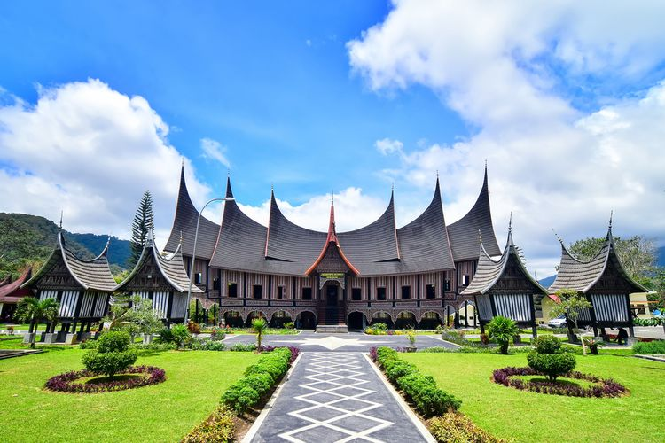

Sejarah Indonesia meliputi suatu rentang waktu yang sangat panjang yang dimulai sejak zaman prasejarah berdasarkan penemuan "Manusia Jawa" yang berusia 1,7 juta tahun yang lalu.
Periode sejarah Indonesia dapat dibagi menjadi lima era: Era Prakolonial, munculnya kerajaan-kerajaan Hindu-Buddha dan Islam di Jawa, Sumatra, dan Kalimantan yang terutama mengandalkan perdagangan; Era Kolonial, masuknya orang-orang Eropa (terutama Belanda, Portugis, dan Spanyol) yang menginginkan rempah-rempah mengakibatkan penjajahan oleh Belanda selama sekitar 3,5 abad antara awal abad ke-17 hingga pertengahan abad ke-20; Era Kemerdekaan Awal, pasca-Proklamasi Kemerdekaan Indonesia (1945) sampai jatuhnya Soekarno (1966); Era Orde Baru, 32 tahun masa pemerintahan Soeharto (1966–1998); serta Orde Reformasi yang berlangsung sampai sekarang.
Bendera Indonesia
Bendera Negara Indonesia yang secara singkat disebut bendera negara adalah Sang Merah Putih.[1] Sang Saka Merah Putih, Merah Putih, atau kadang disebut Sang Dwiwarna (dua warna). Bendera Negara Sang Merah Putih berbentuk empat persegi panjang dengan ukuran lebar 2/3 (dua-pertiga) dari panjang serta bagian atas berwarna merah dan bagian bawah berwarna putih yang kedua bagiannya berukuran sama. Bendera kebanggaan Indonesia ini[1] merangkum nilai-nilai kepahlawanan, patriotisme, dan nasionalisme
Semboyan Negara Indonesia
Bhinneka Tunggal Ika adalah moto atau semboyan bangsa Indonesia yang tertulis pada lambang negara Indonesia, Garuda Pancasila. Frasa ini berasal dari bahasa Jawa Kuno yang artinya adalah “Berbeda-beda tetapi tetap satu”.
Kata bhinnêka berasal dari dua kata yang mengalami sandi, yaitu bhinna 'terpisah, berbeda' dan ika 'itu'. Kata tunggal berarti 'satu'. Secara harfiah, Bhinneka Tunggal Ika dapat diartikan "Itu berbeda, itu satu", yang bermakna meskipun beranekaragam, pada hakikatnya bangsa Indonesia tetap merupakan satu kesatuan. Semboyan ini digunakan untuk menggambarkan persatuan dan kesatuan Bangsa dan Negara Kesatuan Republik Indonesia yang terdiri atas beraneka ragam adat dan budaya, bahasa daerah, ras, suku bangsa, agama dan kepercayaan.
Bandung
Bandung merupakan kota dengan suasana sejuk dan asri di Jawa Barat. Apa keunikan dari Kota Bandung?
Bandung mendapatkan julukan “Kota Kembang”, karena keasrian Kota Bandung yang memiliki banyak pohon besar.
Sebutan Kota Kembang diduga muncul sejak zaman kolonial di mana para gadis Belanda sering mengadakan karnaval menggunakan sepeda maupun kereta yang marak dengan hiasan bunga
Jakarta
Jakarta memang terkenal sebagai kota Metropolitan dengan gaya hidup masyarakatnya yang modern dan dinamis.
Jakarta Pusat memiliki peran sebagai daerah pusat Pemerintahan Indonesia yang kaya akan daya tarik serta keunikan mulai dari kekayaan sejarah berdirinya negara, kesenian, dan wisatanya.
Istana Negara dan Balikota berada di wilayah ini
Bali
Bali (juga dikenal sebagai Kepulauan Bali, Bali: ᬩᬮᬶ) adalah sebuah wilayah provinsi yang terletak di Indonesia.
Ibu kotanya adalah Denpasar. Provinsi Bali terletak di bagian barat Kepulauan Nusa Tenggara. Di awal kemerdekaan Indonesia,
pulau ini termasuk dalam Provinsi Sunda Kecil yang beribu kota di Singaraja, dan kini terbagi menjadi 3 provinsi, yakni Bali, Nusa Tenggara Barat, dan Nusa Tenggara Timur
Surabaya
Surabaya adalah ibu kota Provinsi Jawa Timur yang dikenal sebagai Kota Pahlawan. Surabaya terletak di daerah Pantai Utara, Provinsi Jawa Timur.
Surabaya merupakan kota terbesar kedua setelah Jakarta dengan populasi penduduk sekitar 3 juta orang.
Nama Surabaya, sesuai dengan etimologinya, berasal dari kata Sura ata Suro dan Baya atau Boyo, dalam bahasa Jawa.
Suro adalah jenis ikan hiu, sedang boyo adalah istilah bahasa jawa untuk buaya.
Menurut mitos, dua hewan ini adalah binatang paling kuat yang juga menjadi simbol kota Surabaya sampai saat ini.
Lombok
Pulau Lombok (jumlah penduduk pada tahun 2001: 2.722.123 jiwa) adalah sebuah pulau di kepulauan Sunda Kecil atau Nusa Tenggara yang terpisahkan oleh Selat Lombok dari Bali di sebelah barat dan Selat Alas di sebelah timur dari Sumbawa.
Pulau ini kurang lebih berbentuk bulat dengan semacam "ekor" di sisi barat daya yang panjangnya kurang lebih 70 km.
Luas pulau ini mencapai 5.435 km²
Aceh
Aceh adalah sebuah provinsi di Indonesia yang ibu kotanya berada di Banda Aceh.
Aceh merupakan salah satu provinsi di Indonesia yang diberi status sebagai daerah istimewa dan juga diberi kewenangan otonomi khusus.
Aceh terletak di ujung utara pulau Sumatra dan merupakan provinsi paling barat di Indonesia.
Menurut hasil sensus Badan Pusat Statistik tahun 2021, jumlah penduduk provinsi ini sekitar 5.333.733 jiwa
Padang
Padang adalah kota terbesar di pantai barat Pulau Sumatra sekaligus ibu kota Provinsi Sumatra Barat, Indonesia.
Kota ini adalah pintu gerbang barat Indonesia dari Samudra Hindia.
Secara geografi, Padang dikelilingi perbukitan yang mencapai ketinggian 1.853 mdpl dengan luas wilayah 693,66 km², lebih dari separuhnya berupa hutan lindung.

Yogyakarta
Yogyakarta atau dikenal oleh masyarakat setempat dengan nama Jogja atau Yogya adalah ibu kota sekaligus pusat pemerintahan dan perekonomian dari Daerah Istimewa Yogyakarta, Indonesia.
Kota ini adalah kota besar yang mempertahankan konsep tradisional dan budaya Jawa